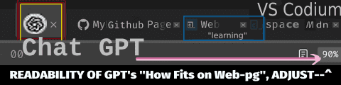

From where to lauch productivity?
Adapting to a typical 'Work Out' as given by app's functionality. New trends keep emerging: viable options like Zen browser (i.e. "enhanced" Firefox).
Zen* browser offers the concept of workspaces, separating types of tasks in workspaces.
A basic scenario is at creative stage, as a basis for web-page to contain images. Let's assume a source for images is built 'ground up' (i.e. post img preparation). Practical level (task): actual Copying of Files to Project's dir [source: your chosen app in use: Paint.NET/Gimp&Bimp/Krita/ where img-files are stored in PC's dir or Cloud (i.e. from online source may require to Dwnld&Save it as 'local file') ].
And, using mv command is practical in such ToDo's that are completely outside of the Web Browser environment.
What initial briefing precedes a typical Workflow?
A bief project description (might be): ¨This pilot project operates under a predefined governance model. Functional requirements, system architecture, security controls, and deployment procedures are established before implementation begins. The team is responsible for development, validation, and production rollout, but may not disclose confidential business information outside authorized channels. All implementation decisions must comply with approved policies and operational constraints. For example, media assets may be restricted to organization-controlled storage, with external cloud storage explicitly prohibited.¨
What's a beginner coder's basic Workflow (who starts w/o IDE)? Below is a picture of Browser's Top-Header-Section designated to contain 'Your Tabs Opened' (by default 'restore session' option helps to continue in Browser, but IDE's have extensions and AI's as well).
← Back to Portfolio, <-click!

Figure: Tabs commonly shown in Web-browser Tab1 | Tab2 | Tab3 etc.*Zen Browser stands out by its UI, a freeware Browser, w/ customizable workspaces.
"30 yrs of Linux" (in 2022), and to this day Linux is gaining popularity in the market of OSs!